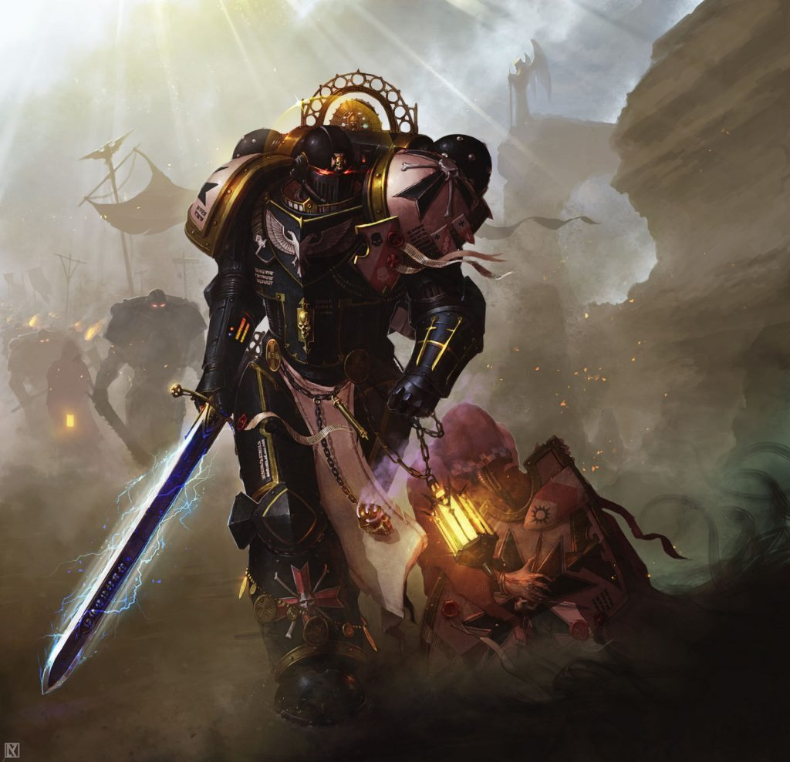
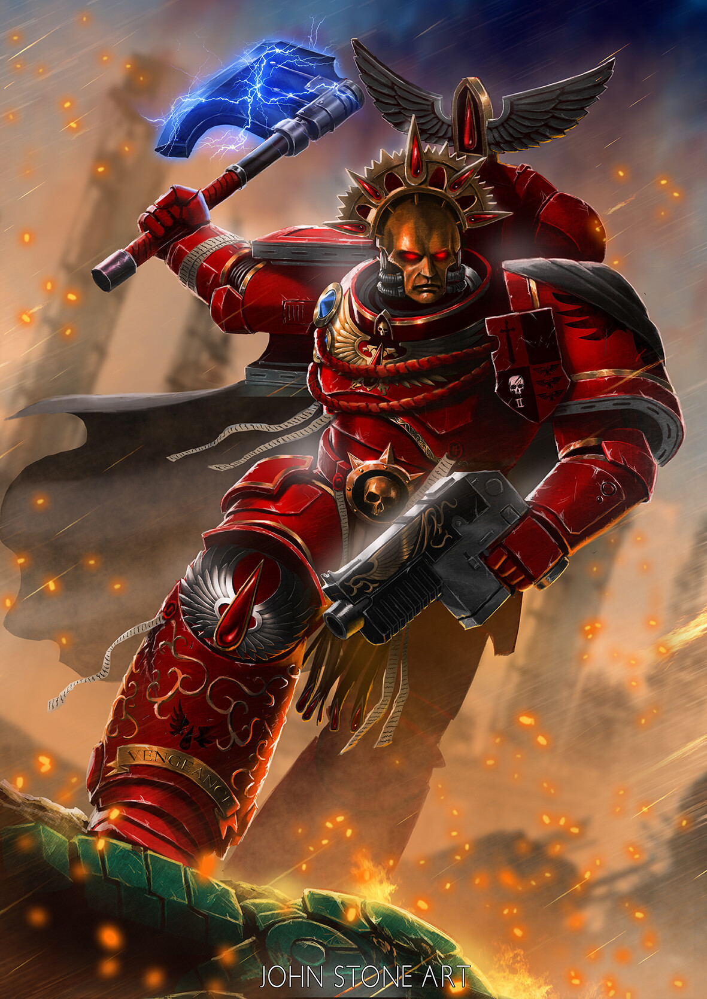

My Top 3 Favourite Space Marine Chapters in Warhammer 40k
By: Zharga Prayata Zainal 5025221136
Warhammer 40k is a popular science fiction franchise that features
a grimdark future where humanity is beset by countless enemies and threats.
One of the most iconic elements of Warhammer 40k is the Space Marines,
genetically enhanced super-soldiers who serve as the elite warriors of the
Imperium of Man. There are many different chapters of Space Marines, each
with their own history, culture, and tactics. In this webpage, I will discuss
my top three favorite Space Marine chapters and explain why I find them appealing
Number 3 : The Black Templars

The Black Templars is a succesor chapter of The Imperial Fists
and their primarch, Rogal Dorn.
They are known for their unwavering dedication to the God-Emperor of Mankind and their fanatic zeal in waging war against the enemies of humanity.
The Black Templars are intensely religious, viewing the Emperor as a divine figure. They see their mission as a holy crusade to cleanse the galaxy of heretics, aliens, and any threats to humanity.
Unlike most Space Marine chapters that have a fixed homeworld, the Black Templars are a fleet-based chapter, constantly crusading across the galaxy. They have no central fortress-monastery and maintain a mobile and flexible force.
They excel in close combat, favoring swords, chainswords, and power weapons. They are known for their relentless charges and fearless demeanor on the battlefield.
As a history buff myself, i find them appealing for their crusading and temple monastery aesthetic, of course referencing the real life Templar Order and the Crusades for the Holy Land in the 1000-1400 AD.
To add to the previous point, in a world of laser guns, titans, giant tanks of Warhammer 40k, their strict adherence to melee combat adds even more precedence to the Templar and Crusading aesthetic.
Number 2 : The Dark Angels
The Dark Angels, a chapter steeped in ancient tradition and legacy since the days of their origins as the First Legion, are the proud descendants of the enigmatic Primarch Lion El'Jonson. Drawing inspiration from the noble Arthurian knights of the round table, their theme and aesthetic exude a sense of chivalry and honor in the grim and brutal universe of Warhammer 40,000.
Their fortress-monastery, known as The Rock, is a colossal asteroid that serves as a constant reminder of their tragic past. It is the shattered remnants of their homeworld, Caliban, which was sundered during the tumultuous events of the Horus Heresy.
On the battlefield, the Dark Angels are akin to knights of diverse skills and backgrounds, united under a common banner. These Space Marines wield a wide-ranging arsenal, from the sacred plasma weaponry to the mighty thunder hammer, showcasing their mastery in both precision ranged combat and finesse in brutal close quarters engagements.
However, what truly distinguishes the Dark Angels from their fellow Space Marine chapters is their obsession with secrecy and their relentless pursuit of the Fallen. The Fallen are those wayward brethren who turned against the Imperium during the darkest days of the Horus Heresy. The Dark Angels' unending quest to hunt down and redeem these Fallen warriors is known as the Unforgiven, echoing the knights' timeless quest for redemption in Arthurian legends. With unwavering resolve, they ride forth tirelessly, seeking to right the wrongs of their past and cleanse their chapter's name from the stain of betrayal.
The Dark Angels' complex narrative, their secretive nature, and their enduring quest for redemption create a captivating and multifaceted chapter within the Warhammer 40,000 universe. They embody the spirit of ancient chivalry in a setting defined by unrelenting darkness and unending warfare.
Number 1 : The Blood Angels

The Blood Angels, a revered chapter of the noble lineage of the Primarch Sanguinius, are an iconic faction within the grim and brutal universe of Warhammer 40,000. Known for their duality of nature, they are both angels of death and cursed sons of a tragic legacy.
The Blood Angels are renowned for their unparalleled dedication to the Emperor of Mankind and their relentless pursuit of perfection in the art of warfare. However, beneath their veneer of nobility and grace lies a dark secret – the Flaw. This genetic curse, a byproduct of their gene-seed, can send them into uncontrollable fits of bloodlust known as the Red Thirst, or even more sinister transformations in the form of the Black Rage.
Similar to their counterparts, the Black Templars, the Blood Angels also possess an intense religious fervor, venerating the Emperor as a divine figure. They perceive their mission as a sacred duty, a never-ending crusade to safeguard humanity from the countless threats that lurk in the grim darkness of the far future.
Unlike many other Space Marine chapters, the Blood Angels maintain a fortress-monastery on their home world, Baal, a desolate planet on the edge of the Imperium. This stronghold, known as the "Astral Knights," stands as a symbol of their resilience and commitment to their heritage.
In battle, the Blood Angels are peerless assault specialists, favoring close combat with a preference for bladed weapons like power swords and lightning claws. Their tactical doctrine places great emphasis on swift and brutal charges, often catching their enemies off guard with their fearless demeanor on the battlefield. The red-armored Astartes of the Blood Angels descend upon their foes like avenging angels, embodying both the grace and fury of their fallen Primarch, Sanguinius.
Much like the Black Templars draw inspiration from the historical Templar Order and the Crusades, the Blood Angels' angelic iconography and their internal struggle with the Red Thirst and Black Rage add layers of complexity to their character, making them one of the most captivating and iconic chapters in the Warhammer 40,000 universe.